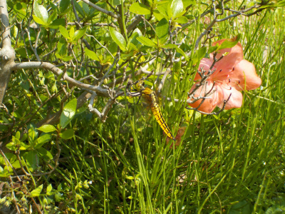
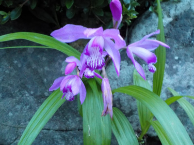
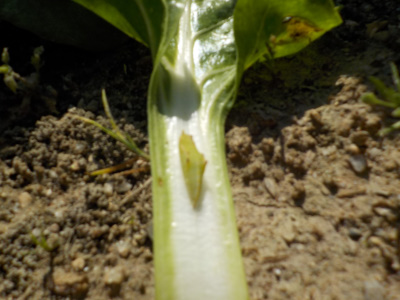
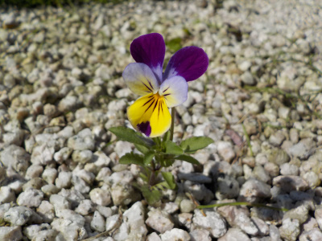
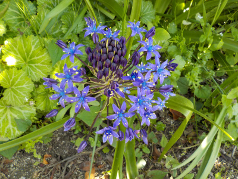
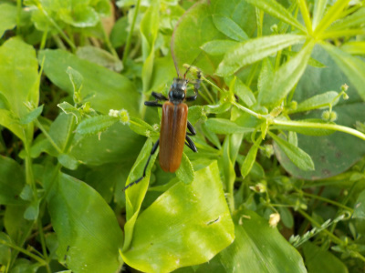

遊びで植物を育てよう
2022/05/22
小さくて黄色いトンボが飛んでいました。

トンボがいたので写真を撮りました。
検索で調べたらハラビロトンボって名前のようです。シオカラトンボの小さいやつかと思ったら違っていました。
【5月TOP】
【日記TOP】
【園芸TOP】
2022/05/22
花菖蒲が色々咲いています。

畑の隅っこの方で色々な色の花菖蒲が咲いています。
このタイプの花が一番多いです。たぶん強いんでしょうね。
【5月TOP】
【日記TOP】
【園芸TOP】
2022/05/14
シランの季節です。

シランはキレイですね。
でも近くで見るとちょっと不気味。
【5月TOP】
【日記TOP】
【園芸TOP】
2022/05/05
ビタミン菜にサナギがいました。

堂々と葉っぱの真ん中でサナギになっています。
ビタミン菜は硬くて食べにくかったかな？サナギが小さい。
【5月TOP】
【日記TOP】
【園芸TOP】
2022/05/05
スミレは邪魔だけど抜かない。

種が落ちて庭に生えてるスミレです。他の草は抜きましたがスミレは抜きませんでした。
白砂の場所で何もない方がいいですけど、スミレは特別待遇です。
【5月TOP】
【日記TOP】
【園芸TOP】
2022/05/05
シラー・ペルビアナはちょっとずつ増えている。

大きくて複雑な形状の花です。木の下でちょっとずつ増えています。
他の植物と競って増えてるんだから強いんだろうな。
【5月TOP】
【日記TOP】
【園芸TOP】
2022/05/04
カミキリがあちこちで飛んでいました。

ネットで調べたところ「ヒメスギカミキリ」のような「アカハナカミキリ」のような「テツイロヒメカミキリ」のような。
似てて違いがわかりません。
沢山いるってことは近くの木が食べられてんでしょう。
【5月TOP】
【日記TOP】
【園芸TOP】
過去の日記
【2024年5月の日記】
【2023年5月の日記】
【2022年5月の日記】
【2021年5月の日記】
【2020年5月の日記】
【2019年5月の日記】
【2018年5月の日記】
【2017年5月の日記】
【2016年5月の日記】
【2015年5月の日記】
【2014年5月の日記】
【2013年5月の日記】
【5月TOP】
【日記TOP】
【園芸TOP】
畑仕事じゃないよ。
【おいしいものを食べよう。】【たくさん寝よう。】
【ソロ活をしよう!】【季節感のあることをしよう。】【動画視聴はほどほどに。】【当サイトの全てのコンテンツは無断転載禁止です。】